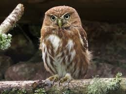
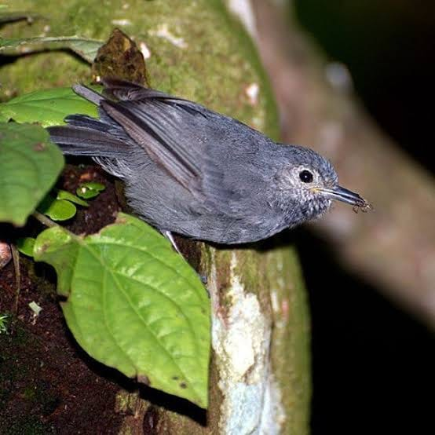
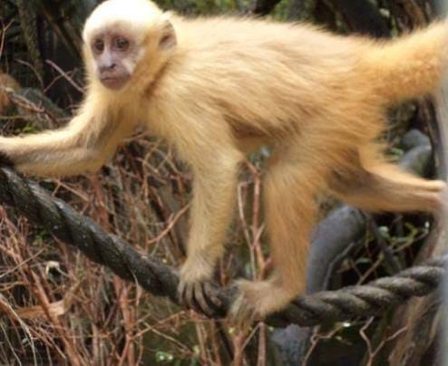
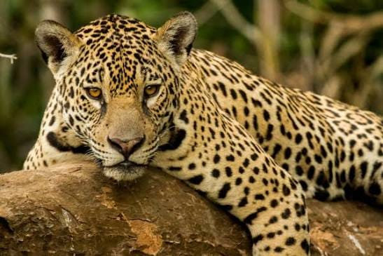
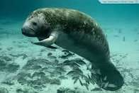
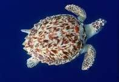
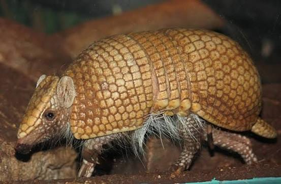

Caburé-de-pernambuco
É carnívoro/insetívoro, alimentando-se de grandes insetos, pequenos mamíferos, répteis e outras aves.

Choquinha-de-alagoas
Alimenta-se principalmente de artrópodes, como insetos e aranhas, que captura na folhagem e em folhas secas. Também consome uma quantidade considerável de pequenos frutos.

Macaco-prego-galego
É onívoro, com forte presença de frutos na dieta. Também come cana-de-açúcar, insetos, folhas, flores, partes de plantas e pequenos animais. Em um estudo, frutos representaram cerca de 43% dos registros alimentares.

Onça-pintada
É carnívora e caça uma grande variedade de animais. Entre suas presas estão capivaras, veados, queixadas, tatus, antas, jacarés, peixes, tartarugas e aves. É uma predadora bastante oportunista.

Peixe-boi-marinho
É herbívoro. Alimenta-se principalmente de plantas aquáticas, como algas, folhas e raízes de mangue e capins marinhos. A composição da dieta pode variar conforme a região e a época do ano.

Tartaruga-de-pente
Alimenta-se principalmente de esponjas, mas também consome corais, anêmonas, algas, crustáceos, ouriços e moluscos. Seu bico estreito ajuda a retirar alimento de fendas nos recifes.

Tatu-bola
É principalmente insetívoro, com destaque para cupins e formigas. Também pode comer besouros, outros invertebrados e pequenas quantidades de material vegetal.